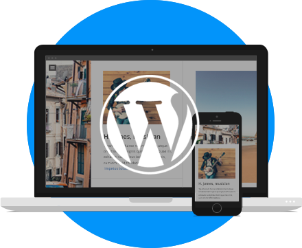
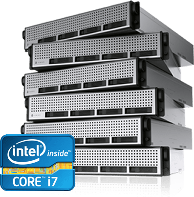

Vous avez un projet de création de site ou d’application web ? Que vous soyez débutant, passionné,développeur ou web agency, en tant que meilleur hébergeur européen, nous vous apportons les solutions dont vous avez besoin pour vos projets web à des prix compétitifs.
L’hébergement Cloud à l’instar des services informatiques est accessible en tant que service plutôt que produit et il est en ce sens comparable aux commodités telles que l’électricité et le gaz. Le client utilise le service autant qu’il le souhaite, en fonction de ses besoins, en ne payant que ce qu’il consomme.
Générez de la confiance, protégez la confidentialité des données de votre site Internet, chiffrez les transactions de votre site e-commerce, améliorez votre référencement.
SSL assure trois choses : Confidentialité, Intégrité , Authentification .
 WordPress est un logiciel de création de site web. ... C'est aussi un système de gestion de contenus très flexible (Content Management System) ou CMS qui vous permet d'administrer, de créer et de gérer votre site internet hautement fonctionnel en n'utilisant que votre navigateur internet.
Un serveur dédié virtuel (également appelé serveur virtuel), en anglais virtual private server (VPS) ou virtual dedicated server (VDS) est une méthode de partitionnement d'un serveur en plusieurs serveurs virtuels indépendants qui ont chacun les caractéristiques d'un serveur dédié, en utilisant des techniques de virtualisation.
Nos Partenaires
Copyright © 2018 Moulay Mohammed Amine